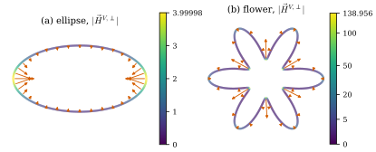
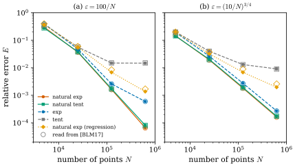
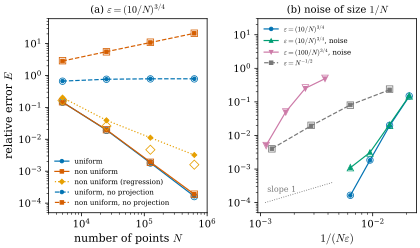
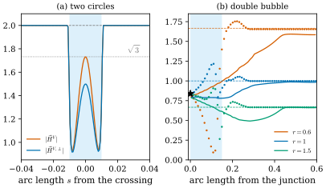

47.7 Numerical Experiments
Goals
- 논문 §8의 실험 설정(test shape, kernel pair, sampling, 오차의 정의)을 구현할 수 있을 만큼 정확히 재구성할 수 있다.
- 인쇄된 공식 (8.1), (8.2), (8.5)를 그대로 구현하면 무엇이 달라지는지 알고, 논문의 그림을 재현할 수 있다.
- Fig. 2–12가 각각 무엇을 보여 주고 어떤 주장을 지지하는지, 그리고 어디까지를 지지하지 않는지 읽을 수 있다.
- natural pair의 수렴 기울기, 교차점과 junction에서 나오는 값(curvature vector들의 평균)을 앞 절의 결과로 설명할 수 있다.
Prerequisites
- Section 47.4: point cloud의 approximate mean curvature (47.4.3), orthogonal 버전(Definition 47.4.10), 두 수렴 정리(Theorem 47.4.8, Theorem 47.4.13)
- Section 47.5: natural kernel pair와 \(C_\xi/C_\rho = d/n\)(Proposition 47.5.2), circle에서의 약분(Proposition 47.5.4)
- PCA로 normal을 추정하는 법(Section 46.8)
Motivation
앞의 수렴 정리들은 점근적이고 상수를 주지 않는다. 실제 point cloud에서 \(\varepsilon\)을 얼마로 잡아야 하는지, kernel pair가 얼마나 중요한지, 고르지 않은 sampling이나 noise에서 무엇이 망가지는지는 정리에서 읽을 수 없다. 논문 §8은 이것을 수치로 본다. 주 대상은 매개변수로 주어진 평면 curve 네 개이고, 교차점과 junction이 있는 curve, 3D double bubble, 그리고 실제 scan 데이터 두 개가 뒤따른다. 논문은 첫머리에서 다른 curvature 추정법과의 철저한 비교는 “길이 때문에 후속 논문에서” 한다고 밝힌다. 이 절은 실험을 그림마다 읽고, 정량적인 그림(Fig. 3–9)은 우리 코드로 다시 계산해 논문의 값과 나란히 놓는다. 재현은 논문이 밝히지 않은 세부 사항 몇 가지를 드러낸다.
The Formula Used in Section 8
§8의 모든 실험은 point cloud varifold의 orthogonal approximate mean curvature를 쓴다. point cloud에서는 (47.4.3)을 그 점의 normal 방향으로 정사영하면 된다(Definition 47.4.10 아래의 설명).
Definition 47.7.1 (orthogonal approximate mean curvature of a point cloud). \(V_N = \sum_{j=1}^Nm_j\delta_{x_j} \otimes \delta_{P_j}\)이 point cloud varifold이고 \(x_{j_0}\)가 그 원자이며 다른 원자와 위치가 겹치지 않는다고 하자. \(r_j = \abs{x_j - x_{j_0}}/\varepsilon\), \(u_j = (x_j - x_{j_0})/\abs{x_j - x_{j_0}}\), \(\Pi_0 = I - P_{j_0}\)이라 할 때
이다. 국소적으로 mass가 거의 같다고 가정하면(\(B_\varepsilon(x_{j_0})\) 안에서 \(m_j = m(1 + o(1))\)) \(m_j\)를 약분해
논문이 normal로 정사영한 버전에 집중하는 이유는 “주어진 해상도에서 점의 국소 distribution이 고르지 않은 것에 더 강건하다”는 것이다. 논문이 드는 간단한 예를 수치로 적으면 다음과 같다.
Example 47.7.2 (a segment sampled unevenly). 선분 \([-1, 1] \times \{0\}\)을 왼쪽이 더 촘촘하게 sampling하고(우리는 \([-1, 0]\)에 간격 \(0.005\)로 \(201\)개, \((0, 1]\)에 간격 \(0.02\)로 \(50\)개), 모든 점에 \(P_j = \{y = 0\}\), 같은 mass를 주자. 원점 \(x_{j_0} = (0, 0)\)에서 vector \(P_ju_j\)들은 모두 \(\pm e_1\)이고 왼쪽을 향한 것이 더 많으므로 합이 \(0\)이 아니다. natural exp pair, \(\varepsilon = 0.1\)이면 ball 안의 원자는 \(25\)개이고 \(\vec H^{V}(0) = (-9.79, 0)\)으로, 촘촘한 쪽을 향하는 큰 가짜 curvature가 나온다. normal projection \(\Pi_0 = \operatorname{diag}(0, 1)\)은 이것을 정확히 \(0\)으로 만들고, 이것이 곧은 선분의 curvature다. [BLM17, §8]
Verification: verify/v-47-7-numerical-experiments.py
이것은 Example 47.4.12에서 본 밀도의 tangential 성분 \(\theta'/\theta\)를 한 점에서 극단적으로 본 것이다. 논문은 mass \(m_j\)를 어떻게 정할지는 “중요하지만 아직 다루지 않은 문제”라고 밝히고, 모든 실험에서 (2D double bubble에서는 명시적으로) 같은 mass를 쓴다. 그 대신 normal projection이 밀도 변화의 효과를 지운다.
Remark 47.7.3 (what the authors claim for (8.2), and how they implement it). 논문은 (47.7.2)의 장점으로 다음을 든다. 계산이 매우 쉽다. 국소 길이나 넓이를 미리 근사할 필요가 없다. varifold에는 orientation이 없으므로 point cloud의 orientation(normal의 부호)에 의존하지 않는다. 수치적으로 잘 거동한다. 구현은 2D와 3D 모두 C++이고, 이웃 탐색은 KD-tree 라이브러리 nanoflann, 국소 회귀는 linear algebra 라이브러리 Eigen, 시각화는 Matlab, CloudCompare, Meshlab을 썼다. 알고리즘의 복잡도는 점의 개수에 대해 linear라고 한다(이웃의 수가 bounded라는 뜻으로 읽는다). 코드는 공개되어 있지 않다. [BLM17, §8, §8.1]
orientation에 대한 주장은 식에서 바로 확인된다. (47.7.2)는 plane의 projection \(P_j\)와 \(\Pi_0\)만 쓰고, projection은 normal \(\pm\nu\)의 부호에 무관하다. 우리 재현은 NumPy의 격자 이웃 탐색으로 같은 식을 계산한다(lib/var47.py의 amc, Section 47.4의 Implementation 상자와 같은 식).
Test Shapes, Kernel Pairs, and the Error (Section 8.1.1)
평면 실험의 test shape는 네 개다. 논문의 [BLM17, Fig. 2]는 이 네 curve를 그린 것이다. (a) 반지름 \(0.5\)인 circle, (b) 가로 \(2\), 세로 \(1\)의 ellipse, (c) 꽃잎 여섯 개의 “flower”(꽃잎 끝이 반지름 \(0.75\), 골짜기가 \(0.25\)), (d) 원점에서 자기 자신과 교차하는 “eight”. 축 눈금 말고는 수치 데이터가 없다. 정확한 curvature는 논문에 없으므로 우리가 계산해 Table 47.7.1에 넣었다.
| shape | 매개변수화 (\(t \in [0, 2\pi)\)) | \(\abs{\vec H}\) | 쓰인 곳 |
|---|---|---|---|
| circle | \(0.5(\cos t, \sin t)\) | \(2\) | Fig. 2(a) |
| ellipse | \((\cos t, 0.5\sin t)\) | \([0.5, 4]\) | Fig. 3(a) |
| flower | polar \(r(t) = 0.5\big(1 + 0.5\sin(6t + \tfrac{\pi}{2})\big)\) | \([0, 140]\); 꽃잎 끝 \(17.33\); \(\abs{\vec H(t_j)}\)의 평균 \(9.878\); 길이 \(7.044\) | Fig. 3(b)(c), 4, 5, 6 |
| eight | \(0.5\sin t\,(\cos t + 1, \cos t - 1)\) | \([0, 6.7745]\); 원점에서 직각으로 교차, 두 가지 모두 curvature \(0\) | Fig. 7 |
Verification: verify/v-47-7-numerical-experiments.py
kernel pair는 네 개이고, profile은 Example 47.1.2의 exp와 tent다.
| 이름 | \(\rho\) | \(\xi\) | Hypothesis 1 | \(C_\xi/C_\rho\) |
|---|---|---|---|---|
| exp | \(\rho_{\exp}(r) = e^{-1/(1 - r^2)}\) | \(\rho_{\exp}\) | 만족 | \(1\) |
| natural exp | \(\rho_{\exp}\) | \(\xi_{\exp} = -\tfrac1n r\rho_{\exp}'\) | 만족 | \(1/2\) |
| tent | \(\rho_{\mathrm{tent}}(r) = 1 - r\) | \(\rho_{\mathrm{tent}}\) | 위반 (\(\rho \in W^{1,\infty}\)뿐) | \(1\) |
| natural tent | \(\rho_{\mathrm{tent}}\) | \(\xi_{\mathrm{tent}} = r/n\) | 위반 (\(\xi\)가 \(r = 1\)에서 불연속) | \(1/2\) |
tent 계열은 이론의 가정 밖이다. 논문이 이것을 일부러 넣은 것은 “natural pair라는 성질이 kernel의 smoothness보다 중요한가”를 보기 위해서다. point cloud는 매개변수 공간에서 고르게 뽑는다. \(h = 2\pi/N\), \(\gamma(t) = (x(t), y(t))\)라 하면
이다. \(T(jh)\)는 정확한 tangent line이고, \(T^{\mathrm{app}}\)은 “linear regression”으로 구한 tangent line이다. 논문은 회귀의 종류(\(y\)를 \(x\)에 대해 맞추는 최소제곱인지, 수직 거리를 최소화하는 PCA인지)를 밝히지 않는다. 3D 실험에서만 PCA(covariance matrix의 가장 작은 eigenvalue의 eigenvector를 normal로)라고 적는다. 오차는
로 정의된다(\(x_j = \gamma(jh)\)) [BLM17, (8.3)–(8.5)]. 또 \(N_{\mathrm{neigh}}\)을 “cloud의 한 점을 중심으로 한 반지름 \(\varepsilon\)의 ball 안의 평균 점 개수”로 정의한다.
Remark 47.7.4 (which normalization the plots show). (47.7.4)를 그대로 계산하면(flower에서 \(\norm{\vec H}_\infty = 140\)) 우리 값은 논문의 Fig. 4–6에 그려진 값보다 모든 곡선, 모든 \(N\)에서 일정하게 약 \(14\)배 작다. 예를 들어 Fig. 4(b)의 natural exp, \(N = 5000\)에서 우리는 \(0.0103\), 그림은 \(\approx 0.15\)이다. 그런데 flower에서 \(\max\abs{\vec H}/\operatorname{mean}_j\abs{\vec H(t_j)}\)는 \(140/9.878 = 14.17\)이고, 분모를 평균으로 바꾼
는 논문의 그림과 여러 곡선, 여러 \(N\)에서 두 자리까지 맞는다(Table 47.7.4–Table 47.7.7). 그래서 그림에 그려진 것은 (47.7.5)로 보인다(우리의 추론. 논문에 적힌 정규화는 (47.7.4), 곧 (8.5)뿐이다). 이 절의 재현은 모두 (47.7.5)로 쟀다. 정규화가 상수배이므로 기울기와 곡선 사이의 순위는 어느 쪽이든 같다.
Verification: verify/v-47-7-numerical-experiments.py
Curvature Vectors on the Ellipse and the Flower (Section 8.1.2)
첫 실험은 정확한 normal을 준 ellipse와 flower에 (47.7.2)를 적용한 것이다. \(N = 10^5\), \(\varepsilon = 0.001\), natural exp pair다. 논문의 [BLM17, Fig. 3]은 점마다 curvature vector를 화살표로, 그 크기를 색(jet colormap)으로 그린다. (a) ellipse의 colorbar는 \(0.5\)부터 \(3.99998\)까지다. 위아래 꼭대기(\(y = \pm0.5\))가 파랑, 양 끝(\(x = \pm1\))이 빨강이고 화살표는 안쪽을 향한다. (b) flower의 colorbar는 \(0.000241203\)부터 \(138.903\)까지다. 여섯 골짜기에서 빨간 긴 화살표가 원점의 반대쪽(바깥)을 향하고, 꽃잎은 대부분 파랑이다. 골짜기는 concave이므로 center of curvature가 바깥에 있다. (c)는 골짜기 하나 근처(\(x \in [-0.5, -0.15]\), \(y \in [0.1, 0.7]\))를 확대한 것으로, 골짜기에서 화살표들이 부채꼴로 바깥을 향한다.
논문은 점이 극각(polar angle)에서 고르게 뽑혀 curve 위에서는 고르지 않은데도 “그 공간 변동은 무시할 만하고” (47.7.2)가 연속 mean curvature를 잘 근사한다고, Theorem 4.8에서 예상되는 대로라고 말한다 [BLM17, §8.1.2].
Figure 47.7.1은 같은 설정을 우리 코드로 다시 계산한 것이다. (a)의 ellipse에서 curve의 색은 양 끝에서 노랑(\(4\)), 위아래에서 보라(\(0.5\))이고, 주홍 화살표는 길이가 크기에 비례하며 모두 안쪽을 향한다. 최소 \(0.5\), 최대 \(3.99998\)로 논문의 colorbar 양 끝과 소수 다섯째 자리까지 같다. (b)의 flower에서는 골짜기 여섯 곳의 화살표가 바깥을 향하고 가장 길다. 최대값은 \(138.956\)으로 논문의 \(138.903\)과 \(0.04\%\) 다르고, 정확한 최대값 \(140\)보다 \(0.7\%\) 작다. 골짜기의 radius of curvature \(1/140 \approx 0.0071\)이 \(\varepsilon = 0.001\)의 \(7\)배밖에 안 되어, Proposition 47.5.4의 상대 bias \((\varepsilon\kappa/2)^2 \approx 0.5\%\) 정도가 보이는 것이다(우리의 해석). 최소값은 inflection point 근처의 \(1.6\times10^{-4}\)(논문 \(2.4\times10^{-4}\))이다. ball 안의 평균 이웃 수는 ellipse \(43.7\), flower \(35.2\)다. Table 47.7.3이 세 값을 나란히 놓은 것이다.
| 양 | 정확한 값 | 논문 Fig. 3 | 우리 재현 |
|---|---|---|---|
| ellipse 최소 | \(0.5\) | \(0.5\) | \(0.5\) |
| ellipse 최대 | \(4\) | \(3.99998\) | \(3.99998\) |
| flower 최소 | \(0\) (inflection point) | \(0.000241203\) | \(0.000164\) |
| flower 최대 | \(140\) | \(138.903\) | \(138.956\) |
Verification: verify/v-47-7-numerical-experiments.py

Convergence Rates (Section 8.1.3)
다음 실험은 flower에서 \(N\)을 늘릴 때 (47.7.4)가 어떻게 줄어드는지를 kernel pair와 tangent(정확한 것과 반지름 \(R = \varepsilon/2\)의 ball에서 회귀한 것, “regression”으로 표시)에 따라 비교한다. 논문은 어떤 rate를 기대할지를 Theorem 4.8로 먼저 따진다.
Remark 47.7.5 (the parameters of Theorem 4.8 for a sampled curve). smooth curve를 고르게 sampling하면 (47.4.14)의 \(d_{1,i}\)와 \(\eta_i\)는 \(1/N\) 정도다. 여기서는 sampling이 전체로는 고르지 않지만 국소적으로는 거의 고르므로 같은 order를 기대한다. (47.4.15)의 \(d_{2,i}\)는 tangent가 정확하면 \(1/N\) 정도이고, 회귀이면 본질적으로 회귀 반지름에 달려 있다(\(R = \varepsilon/2\)는 미리 최적인 값이 아니다). curve 위의 점 \(x\)에서 curvature를 재려면 가장 가까운 cloud 점(거리 \(1/N\) 정도, Theorem 4.8의 \(\abs{z_i - x}\))에 공식을 쓴다. 그래서 정확한 tangent에서는 \(\frac{1}{N\varepsilon} \to 0\)이면 수렴하고 rate가 \(\frac{1}{N\varepsilon} + \varepsilon\) 정도라고 기대한다. [BLM17, §8.1.3]
마지막 \(\varepsilon\)은 \(\vec H^{V,\perp}_{\rho,\xi,\varepsilon}(x)\)와 \(\vec H(x)\)의 차이, 곧 smoothing bias다. 논문은 이 항의 order를 따로 증명하지 않는다(우리의 읽기). 두 실험은 이 예측을 시험하도록 설계되었다.
- \(\varepsilon = (10/N)^{3/4}\): \(\frac{1}{N\varepsilon} = 10^{-3/4}N^{-1/4}\)(\(N = 5000\)에서 \(0.0211\))이므로 적어도 \(N^{-1/4}\)의 rate로 수렴해야 한다.
- \(\varepsilon = 100/N\): \(\frac{1}{N\varepsilon} = 0.01\)로 일정하므로 Theorem 4.8은 수렴을 보장하지 않는다.
Verification: verify/v-47-7-numerical-experiments.py
논문은 \(N_{\mathrm{neigh}}\)이 \(\varepsilon N\)에 비례하며 두 실험에서 각각 \(100\)과 \(10^{3/4}N^{1/4}\)이라고 적는다. 이것은 \(\varepsilon N\) 자체의 값이다. 실제로 ball 안의 점을 세면 \(\varepsilon = 100/N\)에서 \(35.2\)(모든 \(N\)), \(\varepsilon = (10/N)^{3/4}\)에서 \(N = 5000, 25000, 125000, 625000\)일 때 \(16.5\), \(24.9\), \(37.0\), \(55.4\)다. 비례 관계(\(5^{1/4} = 1.495\)배씩)는 맞고 상수만 다르다.
논문이 Fig. 4에서 읽어 내는 관찰은 넷이다 [BLM17, §8.1.3].
- natural kernel pair는 \(\frac{1}{N\varepsilon}\)이 일정할 때(\(0\)으로 가지 않는데도) 좋은 rate로 수렴한다.
- natural pair에 회귀 tangent를 쓴 것이 정확한 tangent에 tent pair를 쓴 것보다도 빨리 수렴한다.
- tent kernel은 Lipschitz뿐이라 Hypothesis 1을 만족하지 않는데도 natural tent pair는 natural exp pair와 같은 수렴을 보인다. 그래서 natural pair라는 성질(NKP)이 profile의 smoothness보다 더 효과적인 것으로 보인다.
- tangent가 정확하지 않으면 수렴이 느리다. \(d_{2,i}\)가 회귀 반지름 \(R\)에 달려 있다는 것과 맞고, \(R\)은 최적화할 또 하나의 매개변수다.
논문의 [BLM17, Fig. 4]는 log-log 그래프 두 개다. 가로축은 점의 개수 \(N\)(\(10^3\)–\(10^7\)), 세로축은 \(E^{\mathrm{rel}}\)이다. (a)가 \(\varepsilon = 100/N\), (b)가 \(\varepsilon = (10/N)^{3/4}\)이다. 곡선은 여덟 개다. exp, natural exp pair, natural exp pair (regression), tent, natural tent pair, natural tent pair (regression), exp (regression), tent (regression)이고, “regression”이 붙지 않은 것은 정확한 tangent다. 데이터 점은 곡선마다 다섯 개이고, 축에서 읽으면 \(N \approx 5\times10^3\)부터 \(5\)배 간격(\(\approx 3.1\times10^6\)까지)이다. 논문은 \(N\)의 값을 적지 않는다. 우리 재현이 \(N = 5000 \cdot 5^k\)에서 그림과 맞으므로 이 읽기를 쓴다. (a)에서 정확한 tangent의 natural pair 두 곡선(주황 \(+\), 초록 \(\square\))이 거의 겹친 채 가장 아래로 곧게 내려가고, tent \((\rho, \rho)\)는 \(N \approx 10^5\)부터 \(1.5\times10^{-2}\) 근처에서 평평해지며, exp \((\rho, \rho)\)는 \(6\times10^{-4}\) 근처에서 꺾인다. 회귀 곡선들은 모두 그 위에 있고 더 완만하다. (b)에서는 natural pair와 exp가 비슷한 기울기로 내려가고 tent만 느리다. Table 47.7.4와 Table 47.7.5는 그림에서 눈으로 읽은 값(유효숫자 한두 자리)과 우리 재현을 나란히 놓은 것이다.
| curve | \(N = 5\cdot10^3\) | \(2.5\cdot10^4\) | \(1.25\cdot10^5\) | \(6.25\cdot10^5\) | \(3.1\cdot10^6\) |
|---|---|---|---|---|---|
| natural exp | ≈0.3 0.303 | ≈0.037 0.0370 | ≈1.6e‑3 1.63e‑3 | ≈6.5e‑5 6.54e‑5 | ≈2.6e‑6 — |
| natural tent | ≈0.28 0.281 | ≈0.038 0.0382 | ≈1.7e‑3 1.73e‑3 | ≈8e‑5 8.15e‑5 | ≈4e‑6 — |
| exp | ≈0.40 0.401 | ≈0.048 0.0481 | ≈2.6e‑3 2.59e‑3 | ≈6e‑4 5.97e‑4 | ≈5.2e‑4 — |
| tent | ≈0.35 0.379 | ≈0.058 0.0568 | ≈1.5e‑2 1.49e‑2 | ≈1.5e‑2 1.48e‑2 | ≈1.7e‑2 — |
| natural exp (regression) | ≈0.4 0.374, 0.346 | ≈0.06 0.0569, 0.0471 | ≈8.5e‑3 6.84e‑3, 2.76e‑3 | ≈1.7e‑3 1.37e‑3, 8.7e‑4 | ≈3.8e‑4 — |
| natural tent (regression) | ≈0.37 | ≈0.06 | ≈1e‑2 | ≈2e‑3 | ≈5e‑4 |
| exp (regression) | ≈0.47 | ≈0.07 | ≈9.5e‑3 | ≈2.3e‑3 | ≈9e‑4 |
| tent (regression) | ≈0.47 | ≈0.08 | ≈2.0e‑2 | ≈1.5e‑2 | ≈1.7e‑2 |
| curve | \(N = 5\cdot10^3\) | \(2.5\cdot10^4\) | \(1.25\cdot10^5\) | \(6.25\cdot10^5\) | \(3.1\cdot10^6\) |
|---|---|---|---|---|---|
| natural exp | ≈0.15 0.146 | ≈0.019 0.0194 | ≈1.8e‑3 1.82e‑3 | ≈1.6e‑4 1.64e‑4 | ≈1.5e‑5 — |
| natural tent | ≈0.145 0.143 | ≈0.02 0.0204 | ≈1.9e‑3 1.93e‑3 | ≈1.75e‑4 1.74e‑4 | ≈1.75e‑5 — |
| exp | ≈0.2 0.195 | ≈0.027 0.0266 | ≈2.7e‑3 2.75e‑3 | ≈2.7e‑4 2.71e‑4 | ≈2.5e‑5 — |
| tent | ≈0.2 0.202 | ≈0.04 0.0401 | ≈1.3e‑2 1.31e‑2 | ≈9e‑3 9.15e‑3 | ≈6.2e‑3 — |
| natural exp (regression) | ≈0.2 0.201, 0.172 | ≈0.037 0.0322, 0.0257 | ≈9e‑3 6.85e‑3, 2.9e‑3 | ≈2.6e‑3 1.97e‑3, 1.24e‑3 | ≈8e‑4 — |
| natural tent (regression) | (겹침) | (겹침) | ≈1e‑2 | ≈3e‑3 | ≈9.5e‑4 |
| exp (regression) | ≈0.24 | ≈0.045 | ≈1e‑2 | ≈2.7e‑3 | ≈8.3e‑4 |
| tent (regression) | ≈0.25 | ≈0.058 | ≈1.9e‑2 | ≈1e‑2 | ≈6.2e‑3 |
두 표에서 “regression” 줄의 우리 값은 두 개다. 앞의 것은 \(y = a + bx\)의 보통 최소제곱(OLS), 뒤의 것은 PCA로 구한 tangent line이다. 정확한 tangent의 네 곡선은 대부분 그림과 두 자리까지 맞고, 가장 큰 차이는 (a)의 tent(\(N = 5000\))에서 약 \(8\%\)다. 회귀 곡선은 OLS가 그림에 더 가깝지만 어느 쪽도 정확히 맞지는 않는다(아래 Fig. 5의 회귀에서는 PCA가 더 가깝다). 논문이 쓴 회귀는 둘 다 아닐 수 있다. 우리는 natural pair의 정확한 tangent 곡선 두 개, \((\rho, \rho)\) 두 개, natural exp의 OLS 회귀 하나만 다시 계산했고 \(N = 3.1\times10^6\)은 계산하지 않았다.
Verification: verify/v-47-7-numerical-experiments.py (\(N = 5000, 25000\)), figures/fig-47-7-2-flower-convergence.py (\(N\)까지 \(625000\))
Figure 47.7.2가 이 재현이다. 왼쪽 패널 (a)부터 보자. 채운 표시와 선이 우리 값, 같은 색의 빈 표시가 논문 그림에서 읽은 값이다. 주홍(natural exp)과 초록(natural tent) 선은 거의 겹쳐 곧게 내려가고, 마지막 두 점 사이의 기울기가 각각 \(-2.00\), \(-1.90\)이다. 파란 점선(exp)은 기울기 \(-0.91\)로 느려지고 논문의 \(3.1\times10^6\) 값(\(5.2\times10^{-4}\))은 사실상 정체다. 회색 점선(tent)은 \(1.5\times10^{-2}\)에서 평평하다(기울기 \(-0.01\)). 주황 점선(natural exp, OLS 회귀)은 기울기 \(-1.00\)이다. 오른쪽 패널 (b)에서는 natural 두 곡선이 \(-1.50\), exp가 \(-1.44\), tent가 \(-0.22\), 회귀가 \(-0.77\)이다. 빈 표시는 거의 모두 채운 표시와 겹친다.

Theorem 4.8의 예측(\(N^{-1/4}\), (a)에서는 보장 없음)보다 훨씬 빠른 이 기울기는 Section 47.5의 분석으로 설명된다(우리의 해석). natural pair에서는 이웃의 배치에서 오는 quadrature 오차가 점마다 약분되어 curve에서는 상대 오차가 \((\varepsilon\kappa/2)^2\) 정도의 smoothing bias만 남는다(Proposition 47.5.4). 그러면 오차는 \(\varepsilon^2\)에 비례하고, \(\varepsilon = 100/N\)이면 \(N^{-2}\), \(\varepsilon = (10/N)^{3/4}\)이면 \(N^{-3/2}\)이다. 측정한 기울기 \(-2.00\)과 \(-1.50\)이 정확히 이 지수다. \((\rho, \rho)\) pair에서는 quadrature 오차가 이웃의 배치에만 달려 있어서, (a)처럼 \(\varepsilon/h\)가 고정되면 줄지 않는다(Figure 47.4.2(b)와 같은 현상). (b)에서는 이웃 수가 \(N^{1/4}\)으로 늘어 quadrature 오차가 준다. smooth exp는 빨리 줄어 bias의 기울기에 가깝고, \(r = 1\)에서 꺾이는 tent는 느리다. 관찰 3(“NKP가 smoothness보다 효과적”)도 같은 설명을 갖는다. 약분은 \(\xi = -s\rho'/n\)이라는 관계만 쓰고 \(\rho\)의 smoothness는 쓰지 않는다.
Uneven Sampling and the Normal Projection (Section 8.1.4)
앞의 실험은 국소적으로 \(m_j \simeq m\)이라고 가정했다. 논문은 이것이 mass가 거의 고르게 퍼진 cloud에서는 합리적이지만 일반적으로는 덜 현실적이라고 말한다. smooth surface \(M\)에 매끄럽게 변하는 밀도 \(\theta\)를 주면 연관 varifold의 generalized mean curvature는 \(\theta\)의 tangential gradient와 관련된 tangential 성분을 갖고, normal 성분은 여전히 \(M\)의 고전적인 mean curvature다(Example 47.4.12에서 본 \(\vec H = \vec H_M + (\theta'/\theta)T\)). 그래서 (47.7.2)는 고르지 않은 sampling이 만든 tangential artifact를 지운다.
이를 보이려고 논문은 flower를 고르지 않게 sampling한다. \(t_j = (j + n_j)h\)이고 \(n_j\)는 평균 \(0\), 분산 \(1\)인 독립 Gaussian이다. 그 밖은 (47.7.3)에서 \(jh\)를 \(t_j\)로 바꾼 것이고, 오차도 \(t_j\)로 잰다. natural exp pair, \(\varepsilon = (10/N)^{3/4}\)에서 \(\vec H^{V,\perp}\)(기본)와 \(\vec H^V\)(“no normal projection”)를 uniform과 non uniform sampling에서 비교한다. 회귀 tangent는 non uniform의 \(\vec H^{V,\perp}\)에서만 시험한다. \(\vec H^V\)의 오차는 정확한 tangent에서도 \(0\)으로 가지 않기 때문이다.
논문의 [BLM17, Fig. 5]는 다섯 곡선의 log-log 그래프다(가로축 \(N\), 세로축 \(10^{-5}\)–\(10^2\)). uniform(파랑 \(*\)), non uniform(주황 \(+\)), non uniform (regression)(노랑 \(\diamond\))이 \(\vec H^{V,\perp}\)이고, uniform, no normal projection(보라 점선)과 non uniform, no normal projection(초록 \(\square\))이 \(\vec H^V\)이다. 정사영한 세 곡선은 내려가고 uniform과 non uniform이 거의 겹친다. 정사영하지 않은 두 곡선은 위에 있고, uniform은 \(0.7\)–\(0.8\)에서 평평하며 non uniform은 오히려 올라간다. 논문은 \(\vec H^V\)의 오차가 수렴하지 않거나 발산하는 것이 Theorem 4.5와 모순이 아니라고 말한다. \(d_i/\varepsilon_i^2 \sim \sqrt N\)이어서 정리의 bound가 \(0\)으로 가지 않기 때문이다. 실제로 \(d_i \sim 1/N\), \(\varepsilon_i = (10/N)^{3/4}\)이면 \(d_i/\varepsilon_i^2 = N^{1/2}/10^{3/2}\)이다.
| curve | \(N = 5\cdot10^3\) | \(2.5\cdot10^4\) | \(1.25\cdot10^5\) | \(6.25\cdot10^5\) | \(3.1\cdot10^6\) |
|---|---|---|---|---|---|
| uniform | ≈0.145 0.146 | ≈0.019 0.0194 | ≈1.8e‑3 1.82e‑3 | ≈1.6e‑4 1.64e‑4 | ≈1.4e‑5 — |
| non uniform | ≈0.15 0.145 | ≈0.02 0.0199 | ≈1.9e‑3 1.93e‑3 | ≈1.9e‑4 1.89e‑4 | ≈2.1e‑5 — |
| non uniform (regression) | ≈0.165 0.202, 0.181 | ≈0.026 0.0394, 0.0306 | ≈4.7e‑3 0.0112, 5.42e‑3 | ≈1.6e‑3 3.22e‑3, 2.06e‑3 | ≈7.8e‑4 — |
| uniform, no projection | ≈0.66 0.665 | ≈0.76 0.760 | ≈0.78 0.785 | ≈0.78 0.787 | ≈0.78 — |
| non uniform, no projection | ≈2.9 2.83 | ≈5.5 5.56 | ≈11 10.8 | ≈21 20.9 | ≈40 — |
회귀 줄의 두 값은 다시 OLS, PCA 순서다. 여기서는 PCA가 그림에 더 가깝다. 나머지 네 곡선은 모든 \(N\)에서 두 자리까지 맞는다.
Verification: verify/v-47-7-numerical-experiments.py (\(N = 5000, 25000\)), figures/fig-47-7-3-density-noise.py
uniform sampling에서 \(\vec H^V\)가 \(0.78\)에서 멈추는 것은 논문이 설명하지 않는다. 다음은 우리의 설명이다.
Remark 47.7.6 (why \(\vec H^V\) stalls on the uniform-parameter sampling). 매개변수 \(t\)에서 고르게 뽑은 점은 curve 위에서 밀도 \(\theta(s) \propto 1/\abs{\gamma'(t)}\)로 퍼져 있다. 그래서 \(N \to \infty\)의 극한은 \(v(C, 1)\)이 아니라 \(v(C, \theta)\)이고, 그 generalized mean curvature는 \(\vec H_C + (\theta'/\theta)T\)이다(\(\theta' = d\theta/ds\), Example 47.4.12). Theorem 4.3에 따라 \(\vec H^V\)는 이 값으로 가므로, 오차 (47.7.5)는 \[ \frac{\operatorname{mean}_j\abs{\theta'/\theta}}{\operatorname{mean}_j\abs{\vec H(t_j)}} = 0.787 \] 로 간다. flower에서 이 값을 직접 적분하면 \(0.787\)이고, Fig. 5의 “uniform, no projection”이 멈춘 높이(그림 \(\approx 0.78\), 우리 재현 \(N = 625000\)에서 \(0.787\))와 같다. 곧 이 곡선은 수렴하지 않는 것이 아니라 다른 varifold의 mean curvature로 수렴한다. normal projection은 이 tangential 항을 지우므로 \(\vec H^{V,\perp}\)는 \(\vec H_C\)로 간다. non uniform sampling에서는 \(\theta\)가 점 간격의 scale에서 요동하므로 \(\theta'/\theta\)가 \(N\)과 함께 커지고(측정한 기울기 약 \(+0.41\)), 그래서 \(\vec H^V\)의 오차가 발산한다.
Verification: verify/v-47-7-numerical-experiments.py
Error against \(1/(N\varepsilon)\) and Noise (Section 8.1.5)
smooth한 경우에는 \(\vec H^{V,\perp}\)와 smooth natural pair가 합리적이라는 것이 확인되었으므로, 논문은 마지막 2D 실험에서 natural exp pair의 \(\vec H^{V,\perp}\)만 본다. Theorem 4.8에 따르면 tangent가 정확하면 오차는 적어도 \(\frac{1}{N\varepsilon}\)의 order로, 회귀 tangent이면 적어도 \(\frac{d_2}{\varepsilon}\)의 order로 준다(\(d_2\)는 회귀의 최대 점별 tangent 오차). 그래서 오차를 \(\frac{1}{N\varepsilon}\)에 대해 그린다. 여러 \(\varepsilon\)과 \(N\), 정확한 tangent와 반지름 \(R\)의 ball에서의 회귀 tangent, 그리고 위치에 더한 Gaussian white noise의 유무를 비교한다. noise가 있는 cloud는 독립 Gaussian \(n_j = (n^1_j, n^2_j)\)로
이다. \(T^{\mathrm{app}}_j\)는 noise가 더해진 위치에서 반지름 \(R\)의 ball로 회귀한 것이고, 오차는 noise가 더해진 점 \(\gamma(jh) + n_j\)에서 잰 값과 \(\vec H(jh)\)의 차이다 [BLM17, §8.1.5].
논문의 관찰은 둘이다. 수렴은 Theorem 4.8이 예견하듯 \(\frac{1}{N\varepsilon}\)에 대해 적어도 1차이고, noise가 없으면 훨씬 좋다. 회귀 tangent에서는 오차가 회귀 오차에, 따라서 \(R\)에 매우 민감하며, “noise가 있는 일부 경우에는 \(R\)을 \(\varepsilon\)보다 크게(예를 들어 \(R = \varepsilon^{9/10}\)) 잡으면 오차가 더 낮다”.
논문의 [BLM17, Fig. 6]는 가로축 \(\frac{1}{N\varepsilon}\)(\(10^{-4}\)–\(10^{-1}\)), 세로축 \(E^{\mathrm{rel}}\)(\(10^{-6}\)–\(1\))의 log-log 그래프다. 곡선 여덟 개의 범례는 \(\varepsilon\)의 규칙(\((10/N)^{3/4}\), \(N^{-1/2}\), \((100/N)^{3/4}\)), 회귀 반지름(\(R = \varepsilon/2\), \(\varepsilon^{0.9}\), \(\varepsilon^{1.1}\)), noise 유무의 조합이다. 각 곡선의 점은 오른쪽(작은 \(N\))에서 왼쪽(큰 \(N\))으로 간다. 가로축의 위치에서 역산하면 이 곡선들도 \(N \approx 5\times10^3\)–\(3\times10^6\)이다(예를 들어 \(\varepsilon = (10/N)^{3/4}\)이면 \(\frac{1}{N\varepsilon}\)이 \(0.0211\)에서 \(0.0042\)까지).
| curve | \(N = 5\cdot10^3\) | \(2.5\cdot10^4\) | \(1.25\cdot10^5\) | \(6.25\cdot10^5\) | \(3.1\cdot10^6\) |
|---|---|---|---|---|---|
| \((10/N)^{3/4}\) | ≈0.15 0.146 | ≈0.02 0.0194 | ≈1.85e‑3 1.82e‑3 | ≈1.65e‑4 1.64e‑4 | ≈1.5e‑5 |
| \((10/N)^{3/4}\), regr. \(R = \varepsilon/2\) | ≈0.2 0.201, 0.172 | ≈0.039 0.0322, 0.0257 | ≈9.3e‑3 6.85e‑3, 2.9e‑3 | ≈2.6e‑3 1.97e‑3, 1.24e‑3 | ≈8e‑4 |
| \(N^{-1/2}\) | ≈0.24 0.229 | ≈0.08 0.0811 | ≈0.02 0.0194 | ≈4e‑3 4.05e‑3 | ≈8e‑4 |
| \(N^{-1/2}\), regr. \(R = \varepsilon/2\) | ≈0.3 0.289, 0.264 | ≈0.12 0.116, 0.0995 | ≈0.038 0.0324, 0.0254 | ≈0.0145 8.7e‑3, 5.5e‑3 | ≈6e‑3 |
| \((10/N)^{3/4}\), noise | ≈0.15 0.150 | ≈0.02 0.0213 | ≈3e‑3 3.12e‑3 | ≈1.1e‑3 1.10e‑3 | ≈5.7e‑4 |
| \((100/N)^{3/4}\), noise | ≈0.5 0.491 | ≈0.26 0.255 | ≈0.05 0.0504 | ≈5e‑3 5.13e‑3 | ≈4.8e‑4 |
| \((100/N)^{3/4}\), noise, regr. \(R = \varepsilon^{0.9}\) | ≈0.58 0.827, 0.633 | ≈0.38 0.634, 0.461 | ≈0.16 0.272, 0.174 | ≈0.055 0.078, 0.030 | ≈0.022 |
| \((100/N)^{3/4}\), noise, regr. \(R = \varepsilon^{1.1}\) | ≈0.56 0.684, 0.625 | ≈0.28 0.365, 0.319 | ≈0.063 0.090, 0.073 | ≈0.016 0.026, 0.021 | ≈0.02 |
Verification: verify/v-47-7-numerical-experiments.py (\(N = 5000, 25000\)), figures/fig-47-7-3-density-noise.py
noise가 없는 곡선과 noise가 있는 곡선은 정확한 tangent에서 네 \(N\) 모두 그림과 맞는다. 회귀 곡선은 이번에도 OLS와 PCA 사이 어딘가에 있다. 마지막 두 줄이 \(R\)에 대한 주장의 근거인데, 그림에서도 우리 재현에서도 \(R = \varepsilon^{1.1}\)(더 작은 \(R\))이 \(R = \varepsilon^{0.9}\)보다 낮다. 그림에서는 가운데 세 점에서 뚜렷이 그렇고, 양 끝의 두 점(\(\approx 0.58\) 대 \(\approx 0.56\), 그리고 \(\frac{1}{N\varepsilon} \approx 7.6\times10^{-4}\)에서 둘 다 \(\approx 0.02\))에서는 비슷하다. \(R = \varepsilon^{9/10}\)이 더 낮은 점은 없다. 우리 재현에서는 계산한 네 \(N\) 모두에서, 두 회귀 방법 모두 그렇다. 본문의 “\(R = \varepsilon^{9/10}\)이 더 낮다”는 이 범위의 그림으로는 지지되지 않는다. \(N\)이 더 커지면 그렇게 될 것이라는 경향을 말한 것일 수 있다(우리의 평가).
Figure 47.7.3이 Fig. 5와 Fig. 6의 일부를 다시 그린 것이다. 왼쪽 (a)에서 실선 두 개(uniform, non uniform)는 거의 겹쳐 내려가고, 파란 파선(uniform, no projection)은 \(0.787\)로 평평해지며, 주홍 파선(non uniform, no projection)은 올라간다. 오른쪽 (b)는 가로축이 \(\frac{1}{N\varepsilon}\)이다. 파란 곡선(noise 없음)과 초록 곡선(noise 있음)은 \(N = 25000\)까지 겹치다가 초록이 떨어져 나와 \(10^{-3}\) 근처에서 느려진다. noise가 없을 때의 오차는 \(\varepsilon^2\)으로 빨리 줄어들어, \(N \gtrsim 10^5\)부터는 noise가 만드는 오차가 더 커지기 때문으로 보인다(우리의 해석). 같은 noise에서 더 큰 \(\varepsilon = (100/N)^{3/4}\)(자주)는 가파르게 내려간다. 회색 파선 \(\varepsilon = N^{-1/2}\)은 Theorem 4.5가 수렴을 보장하는 한계(\(d/\varepsilon^2\)가 일정)이지만, \(\vec H^{V,\perp}\)는 Theorem 4.8의 영역이라 수렴하고, 구간마다의 기울기가 \(1.3\), \(1.8\), \(1.9\)로 \(2\)에 다가간다(Exercise 47.7.4).

Crossings and Junctions (Section 8.2)
논문은 고전적인 generalized mean curvature의 성질과 일관되게 \(\vec H^V\)와 \(\vec H^{V,\perp}\)가 모두 곧은 교차의 zero mean curvature를 보존한다고 말한다. 교차하는 두 직선은 stationary이고(Example 46.5.8), 이산 판도 symmetry 때문에 \(0\)을 준다(Exercise 47.4.3). 이때 \(\vec H^{V,\perp}\)를 써도 교차점의 \(0\)은 그대로이고, regular point에서는 앞 절의 이유로 더 일관된다.
논문의 [BLM17, Fig. 7]은 eight를 \(N = 10000\)개 점, 정확한 tangent, natural exp pair, \(\varepsilon = 100/N = 0.01\)로 계산한 curvature vector와 그 크기다. 보기 좋게 점의 \(5\%\)만 그렸다. colorbar는 \(3.13862\times10^{-5}\)부터 \(6.76333\)까지이고, 교차점(원점)과 그 근처의 거의 곧은 가지는 진한 파랑, 네 개의 굽은 모서리가 빨강이다. 우리 재현에서 eight는 원점에서 직각으로 교차하고(Table 47.7.1), 원점에 놓인 두 원자에서 \(\abs{\vec H^V}\)와 \(\abs{\vec H^{V,\perp}}\)는 모두 \(10^{-11}\)보다 작다. 최대값은 \(\abs{\vec H^{V,\perp}} = 6.7639\), \(\abs{\vec H^V} = 6.7686\)이고 정확한 최대 curvature는 \(6.7745\)이다. 논문은 Fig. 7이 어느 쪽인지 적지 않는다. 그런데 그림에서 거의 곧은 두 가지의 화살표는 가지에 수직이다. 같은 곳에서 우리의 \(\vec H^V\)는 tangential 성분이 더 크다. 예를 들어 \((0.2, 0)\)에 가장 가까운 원자에서 \(\abs{\vec H^V} = 0.616\) 가운데 tangential 성분이 \(0.511\)이고, \(\abs{\vec H^{V,\perp}} = 0.345\)(정확한 값 \(0.345\))다. 그래서 Fig. 7은 \(\vec H^{V,\perp}\)로 보이고(우리의 추론), colorbar의 최대 \(6.76333\)도 \(\vec H^{V,\perp}\)에 더 가깝다. 덧붙이면, 교차점에서 떨어진 곳의 최대 오차는 \(\vec H^V\)가 \(2.43\), \(\vec H^{V,\perp}\)가 \(0.0106\)이다. 매개변수에서 고른 sampling의 밀도 효과(Remark 47.7.6)가 eight에서도 크게 나타난다.
더 일반적으로 논문은 “연관 varifold의 first variation이 \(\norm{V}\)에 대해 absolutely continuous인 특이 배치를 올바르게 다룬다”고 말하고, 같은 반지름의 두 circle의 합집합과 평면의 standard double bubble로 보인다. 두 circle의 경우 first variation의 linearity에서 교차점 \(p\)의 기대값이 두 curvature의 평균이라고 한다. 이것을 regularized 양에 대한 명제로 적으면 다음과 같다.
Proposition 47.7.7 (the value at a transversal crossing). \(C_1\), \(C_2\)가 \(\R^n\)의 boundary 없는 \(C^2\) curve이고 점 \(p\)에서 횡단적으로 교차하며, \(V = v(C_1, 1) + v(C_2, 1)\)이라 하자. kernel pair \((\rho, \xi)\)에 대해
이다. \(\vec H_i\)는 \(C_i\)의 curvature vector다. 이 명제는 논문의 서술을 우리가 정리한 것이다. [BLM17, §8.2]
Proof. 정의 (47.4.2)의 분자와 분모는 \(V\)에 대해 linear이다. 각 \(C_i\)는 boundary가 없으므로 \(\delta V_i = -\vec H_i\,\mathcal{H}^1\llcorner C_i\)이고 \[ (\delta V_i*\rho_\varepsilon)(p) = -\int_{C_i}\vec H_i(y)\,\rho_\varepsilon(y - p)\,d\mathcal{H}^1(y) \] 이다. \(\vec H_i\)가 연속이므로 이것은 \(-(\vec H_i(p) + o(1))\int_{C_i}\rho_\varepsilon(y - p)\,d\mathcal{H}^1\)이고, \(C^2\) curve는 scale \(\varepsilon\)에서 \(p\)를 지나는 직선에 가까우므로 \(\int_{C_i}\rho_\varepsilon(y - p)\,d\mathcal{H}^1 = \varepsilon^{1-n}(C_\rho + o(1))\)이다. 같은 이유로 \((\norm{V_i}*\xi_\varepsilon)(p) = \varepsilon^{1-n}(C_\xi + o(1))\)이다. 더하면 \[ \vec H^V_{\rho,\xi,\varepsilon}(p) = \frac{C_\xi}{C_\rho}\cdot\frac{C_\rho\,(\vec H_1(p) + \vec H_2(p)) + o(1)}{2C_\xi + o(1)} \] 이고 \(\varepsilon \to 0\)에서 (47.7.7)이다. \(\square\)
연속인 설정에서 교차점 \(p\)는 \(\norm{V}\)-null이므로 \(\vec H(p)\)의 pointwise value에는 뜻이 없다. 그런데도 regularized 양은 \(p\)에서 연속이고 평균값을 준다. 반지름 \(0.5\)이고 중심이 \((\pm0.25, 0)\)인 두 circle은 \(p = (0, 0.4330)\)에서 \(60^\circ\)로 교차하고, \(\vec H_1(p) = (-1, -1.732)\), \(\vec H_2(p) = (1, -1.732)\)이므로 평균은 \((0, -\sqrt3)\), 크기 \(\sqrt3 \approx 1.73\)이다. 논문은 이것이 교차점의 수치값과 맞는다고 말한다.
\(\vec H^{V,\perp}\)는 사정이 다르다. 교차점 근처의 원자는 어느 한 가지에 속하므로 그 가지의 normal로 정사영된다. 가지 1의 원자에서는 \(\Pi_{P_1^\perp}(0, -\sqrt3)\)이고 크기가 \(\sqrt3\cos30^\circ = 1.5\)다. 가지 2의 원자에서는 다른 방향을 향한다. 그래서 \(\vec H^{V,\perp}\)는 교차점에서 연속일 수 없다. 두 가지의 원자가 \(p\)에 하나씩 겹쳐 있다면 (47.4.13)대로 두 projection을 평균해야 하고, 그 크기는 \(0.75\abs{n_1 + n_2} = 1.299\)다(\(n_i\)는 \(p\)에서 \(C_i\)의 unit normal).
Verification: verify/v-47-7-numerical-experiments.py
논문의 [BLM17, Fig. 8]은 두 circle의 합집합을 \(N = 10000\)개 점(정확한 tangent, natural exp pair, \(\varepsilon = 0.01\))으로 계산한 것이다. (a)는 \(\vec H^V\)의 전체 그림으로 화살표가 각 circle의 중심을 향하고 교차점 \((0, \pm0.433)\) 근처에서만 섞인다. (b)는 위쪽 교차점의 확대(\(x \in [-0.025, 0.025]\), \(y \in [0.41, 0.455]\))로, 교차점 자체는 주황(\(\approx 1.7\))이고 화살표가 아래를 향하며, 교차점에서 조금 떨어진 곳에서 값이 진한 파랑(\(\approx 0.93\))까지 내려갔다가 \(\varepsilon\) 밖에서 빨강(\(2\))으로 돌아온다. 화살표의 방향은 교차점을 지나며 연속적으로 돈다. (c)는 같은 확대의 \(\vec H^{V,\perp}\)로, 각 가지의 화살표가 그 가지의 normal 방향이라 교차점에서 엇갈린다. colorbar는 (a)(b)가 \(0.926446\)–\(1.99991\), (c)가 \(0.917004\)–\(1.99991\)이다. 우리 재현의 최소값은 \(0.926446\)과 \(0.917005\), 최대값은 \(1.99991\)로 논문과 여섯 자리까지 같다. 교차점에 가장 가까운 원자(\(p\)에서 arc length \(2.1\times10^{-4}\))에서 \(\abs{\vec H^V} = 1.7309\), \(\abs{\vec H^{V,\perp}} = 1.4984\)다. (c)의 교차점 색은 colorbar의 가운데(\(\approx 1.46\)) 근처로 보이는데 색으로 읽은 것이라 \(1.5\)와 구별하기 어렵다. 논문에는 이 값이 적혀 있지 않다.
두 번째 예는 바깥 호의 반지름이 \(1\)과 \(0.6\)인 평면의 standard double bubble이다(Example 47.6.4, 가운데 호의 반지름 \(1.5\); double bubble에 대한 자세한 것은 Cicalese, Leonardi, Maggi의 2012년 논문 [CLM12]를 인용한다). 세 호 위에 \(800\)개 점을 고르게 놓고 mass \(1\), 회귀 tangent, natural exp pair, \(\varepsilon = 0.15\)로 계산한다. 논문의 [BLM17, Fig. 9]에서 (a)는 double bubble과 \(800\)개 점(왼쪽 작은 거품, 오른쪽 큰 거품, 위아래의 triple junction은 약 \((0.07, \pm0.6)\))이다. (b)는 위쪽 junction 근처의 \(\vec H^V\)로, 시각화를 위해 고정된 비율로 크기를 바꾸었다. 작은 거품은 빨강, 큰 거품은 초록, 가운데 호는 하늘색이고, junction 근처에서 화살표의 방향과 크기가 들쭉날쭉하다. (c)는 그 진동을 없애려고 재구성한 curvature를 scale \(2\varepsilon\)에서 단순 평균한 것으로, junction 근처의 값이 매끄럽게 이어진다. colorbar는 (b)가 \(0.229389\)–\(1.75353\), (c)가 \(0.512783\)–\(1.58696\)이다. 우리 재현(아래에서 말하는 세 가지 점 배치)에서 평균 전 \(\abs{\vec H^V}\)의 최대는 \(1.754\)–\(1.778\)이고 최소는 \(0.095\)–\(0.230\)으로 배치에 민감하며, 평균 뒤는 \(0.492\)–\(0.501\)과 \(1.592\)–\(1.595\)로 (c)의 양 끝과 가깝다. 논문은 이론적인 singular point에 매우 가까운 점의 curvature vector가 \((0.107, -0.809)\)로 연속 double bubble에서 직접 계산한 기대값 \((0, -0.839)\)과 상대 오차 \(13\%\)이고, 점을 두 배로(\(N = 1600\), \(\varepsilon = 0.075\)) 하면 \(7\%\)라고 보고한다.
기대값 \((0, -0.839)\)의 출처는 논문에 없다. 우리 계산으로는 junction \(p = (0.0688, 0.5960)\)에서 세 호의 curvature vector \((-0.191, -1.656)\), \((0.803, -0.596)\), \((-0.612, -0.265)\)의 평균이 \((0, -0.8389)\)이다. 곧 (47.7.7)의 세 가지 판이다. 세 가지가 \(120^\circ\)로 만나 conormal의 합이 \(0\)이므로 singular part가 없고, 그래서 이 배치가 “first variation이 absolutely continuous인” 경우에 든다.
| 배치 | 설정 | 기대값 | 논문 | 우리 재현 |
|---|---|---|---|---|
| eight의 교차점 | \(N = 10^4\), \(\varepsilon = 0.01\) | \(0\) | 진한 파랑 | \(\lt 10^{-11}\) |
| 두 circle의 교차점, \(\abs{\vec H^V}\) | \(N = 10^4\), \(\varepsilon = 0.01\) | \(\sqrt3 = 1.7321\) | \(\approx 1.73\) | \(1.7309\) |
| 2D double bubble, \(2\varepsilon\) 평균 | \(N = 800\), \(\varepsilon = 0.15\) | \((0, -0.8389)\) | \((0.107, -0.809)\), \(13\%\) | \((0.1065, -0.7961)\), \(13.7\%\) (배치에 따라 \(13.3\)–\(13.7\%\)) |
| 2D double bubble, \(2\varepsilon\) 평균 | \(N = 1600\), \(\varepsilon = 0.075\) | 같음 | \(7\%\) | \(6.8\%\) (배치에 따라 \(6.8\)–\(9.0\%\)) |
| 2D double bubble, 평균 없음 | \(N = 800\) / \(1600\) | 같음 | — | \(5.0\%\) / \(2.8\%\) (배치에 따라 \(4.5\)–\(7.1\%\) / \(2.8\)–\(10\%\)) |
| 3D double bubble (0.7, 1), 특이 원을 따라 평균한 \(\abs{\vec H}\) | \(N = 34378\), \(\varepsilon \approx 0.111\) | \(1.4662\) | \(1.51\) (비교값 \(1.46\)) | — |
| 3D double bubble (1, 1), 특이 원 | \(N = 33275\), \(\varepsilon \approx 0.131\) | \(2/\sqrt3 = 1.1547\) | 수치 없음 | — |
Verification: verify/v-47-7-numerical-experiments.py
우리 재현에서 2D double bubble의 회귀는 반지름 \(\varepsilon\)의 ball에서의 PCA이고(논문은 3D에서만 이렇게 밝힌다), \(2\varepsilon\) 평균 뒤 junction에 가장 가까운 점(거리 \(0.0052\))의 값이 \((0.1065, -0.7961)\)로 논문의 \((0.107, -0.809)\)와 매우 가깝다. 그런데 평균하기 전의 \(\vec H^V\)는 같은 점에서 \((-0.0015, -0.7973)\)으로 오차가 \(5.0\%\)이고, \(N = 1600\)에서는 \(2.8\%\)다. 평균 전의 값은 점의 배치에 민감하다. 이 재현은 첫 점을 간격의 \(1/2\)에서 시작했는데, 간격의 \(0\), \(1/4\), \(1/2\)에서 시작한 세 배치를 비교하면 junction에 가장 가까운 점의 오차가 \(N = 800\)에서 평균 전 \(4.5\)–\(7.1\%\), 평균 뒤 \(13.3\)–\(13.7\%\)이고, \(N = 1600\)에서는 평균 전 \(2.8\)–\(10\%\), 평균 뒤 \(6.8\)–\(9.0\%\)다. 곧 \(N = 800\)에서는 평균이 junction의 값을 오히려 나쁘게 만들고 논문의 \(13\%\)는 대부분 평균에서 온다. \(N = 1600\)에서는 배치에 따라 평균 전의 오차가 더 클 수도 있어서 같은 결론을 내릴 수 없다(우리 재현).
Figure 47.7.4가 두 특이 배치를 curve를 따라 본 것이다. 왼쪽 (a)는 두 circle에서 왼쪽 circle의 점들을 교차점에서의 arc length \(s\)에 대해 그린 것이다. 하늘색 띠가 \(\abs{s} \lt \varepsilon\)이다. 주홍 \(\abs{\vec H^V}\)는 교차점에서 \(\sqrt3\)(회색 점선)까지 올라가고, 그 양옆 \(\abs{s} \approx 0.0084\)에서 \(0.926\)까지 내려간다. 파랑 \(\abs{\vec H^{V,\perp}}\)는 교차점에서 \(1.5\)다. ball이 다른 가지를 만나지 않는 \(\abs{s} \gt \varepsilon/\sin60^\circ = 0.0115\)에서는 두 값 모두 \(2\)로 돌아온다. 오차가 교차점의 \(\varepsilon\)-neighborhood에 갇혀 있다는 논문의 말(그래서 a.e. 수렴의 관점에서는 두 정의가 똑같이 좋다)이 이것이다. 오른쪽 (b)는 double bubble의 위쪽 junction에서 세 호를 따라 간 것이다. 작은 점이 평균 전의 \(\abs{\vec H^V}\), 선이 \(2\varepsilon\) 평균, 파선이 정확한 curvature, 검은 별이 기대값의 크기 \(0.839\)다. 평균 전의 값은 junction에서 \(1.7\varepsilon\) 정도까지 크게 진동한다(작은 거품의 호에서 \(0.095\)부터 \(1.754\)까지). 회귀 tangent가 junction 근처에서 여러 가지를 섞어 틀어지기 때문이다. 평균한 선은 진동이 없지만 junction에서 \(3\varepsilon\) 가까이까지 정확한 값에서 \(2\%\) 넘게 벗어나 있고, 작은 거품에서는 junction에서 멀리 떨어진 곳에서도 \(1.584\)로 정확한 값 \(1.667\)보다 약 \(5\%\) 작다. 반지름 \(0.6\)인 호를 반지름 \(0.3\)의 ball에서 평균하면 vector들의 방향이 돌아가므로 크기가 \(\sin\phi/\phi = 0.958\)배(\(\phi = 2\arcsin(0.3/1.2)\))가 되고, 평균 전의 값 자체에도 natural pair의 bias \(0.7\%\)(\(1.654\))가 있기 때문이다.

3D Point Clouds (Section 8.3)
마지막 실험은 3D다. 첫째는 3D standard double bubble의 boundary(세 spherical cap)를 discretize한 cloud다. 논문의 [BLM17, Fig. 10](a)는 바깥 cap의 반지름이 \(1\)과 \(0.7\)인 경우로, \(N = 34378\), \(\varepsilon \approx 0.111\)이다. normal은 반지름 \(\varepsilon\)의 ball에서 중심화한 좌표의 covariance matrix를 계산하고 가장 작은 eigenvalue의 eigenvector로 정한다(PCA). approximate mean curvature도 반지름 \(\varepsilon\)의 ball에서 계산하고, 2D double bubble처럼 scale \(2\varepsilon\)에서 한 번 더 평균한다. cloud는 “거의 고른” discretization으로, 반올림 오차 때문에 세 meridian curve를 따라 작은 “구멍”이 있다. 그림은 작은 cap(빨강), 큰 cap(노랑), 가운데 막(파랑)을 전체와 cross-section으로 보이고, 가독성을 위해 특이 원에 가장 가까운 점들의 (부호를 바꾼) curvature vector만 그린다. 그 vector들은 원반 모양으로 퍼져 기대되는 plane 안에 놓인다. colorbar는 인쇄되어 있지 않다(본문에 파랑이 작은 값, 빨강이 큰 값이라고만 적혀 있다).
논문은 특이 원을 따라 mean curvature의 크기를 평균하면 \(1.51\)이고, 비교값은 \(1.46\)으로 “교차하는 세 sphere의 mean curvature vector의 평균의 크기의 근사값”이라고 한다. 작은 편차는 구멍 근처에 국한되며 discretization을 세분하고 더 많은 점의 이웃에서 평균하면 줄어든다고 한다. 우리 계산으로 가운데 cap의 반지름은 \(1/(1/0.7 - 1) = 2.333\)이고, 특이 원에서 세 sphere의 mean curvature vector(크기 \(2/r\), 곧 principal curvature의 합)의 평균의 크기는 \(1.4662\)다. 논문의 \(1.46\)과 맞고, 수치값 \(1.51\)은 이보다 \(3.0\%\) 크다. (b)와 (c)는 바깥 cap의 반지름이 모두 \(1\)인 경우로 가운데 cap이 평평한 disk이다(\(N = 33275\), \(\varepsilon \approx 0.131\)). (b)는 특이 호 근처의 vector만, (c)는 모든 (부호를 바꾼) vector를 그렸고, 점은 더 크게 그렸다. 이 경우의 수치값은 없다. 같은 방법으로 계산한 기대값은 \(2/\sqrt3 = 1.1547\)이다.
마지막 두 예는 실제 scan 데이터다. [BLM17, Fig. 11]은 \(435\,545\)개 점의 “dragon”(지름 \(1\), \(\varepsilon = 0.007\))이고, (a) 전체, (b) 꼬리 확대, (c) 머리 확대다. [BLM17, Fig. 12]는 \(543\,524\)개 점의 조각상(가로 \(0.41\), 높이 \(1\))을 두 방향에서 본 것이고, \(\varepsilon\)은 적혀 있지 않다. 두 그림 모두 natural exp pair로 계산하고 normal로 정사영한 approximate mean curvature의 크기를 색으로 보인다(파랑에서 빨강, colorbar 없음). plane을 미리 모르므로 점마다 회귀로 normal을 구하고, 도형이 regular하다고 보아 (47.7.2)를 추가 평균 없이 쓴다. dragon에서는 몸통 같은 평평한 곳이 파랑, 비늘과 뿔, 발가락과 이빨 같은 뾰족한 돌출부가 빨강, 주름과 능선이 초록에서 노랑이다. 조각상에서는 옷 주름, 팔, 대좌의 테두리 같은 능선이 드러나고 넓은 부분은 파랑이며, 대좌의 일부에 빨간 점이 흩어져 있다. 두 데이터의 출처는 적혀 있지 않고, 정답이 없는 정성적 예시다.
The Experiments at a Glance
| 항목 | 내용 |
|---|---|
| 데이터 | 2D 합성 curve 넷(Table 47.7.1), 두 circle, 2D double bubble(반지름 \(1\), \(0.6\)), 3D double bubble 둘, scan 데이터 둘(dragon, 조각상, 출처 미기재) |
| sampling | 매개변수에서 고르게(\(t_j = jh\)); 흔든 sampling \(t_j = (j + n_j)h\); 위치 noise(표준편차 \(1/N\)으로 읽음); 3D bubble은 구멍 있는 “거의 고른” discretization |
| mass, plane | mass는 모두 같다. plane은 정확한 것 또는 회귀(2D는 방법 미기재, \(R = \varepsilon/2, \varepsilon^{0.9}, \varepsilon^{1.1}\); 3D는 반지름 \(\varepsilon\)의 PCA) |
| 공식 | 주로 (47.7.2); 비교용 \(\vec H^V\); 특이 배치에서 \(2\varepsilon\) 평균 |
| kernel pair | exp, natural exp, tent, natural tent(Table 47.7.2); 2D 수렴 실험 말고는 모두 natural exp |
| \(\varepsilon\) | \(100/N\), \((10/N)^{3/4}\), \((100/N)^{3/4}\), \(N^{-1/2}\)(flower); \(0.001\)(Fig. 3); \(0.01\)(eight, 두 circle); \(0.15\), \(0.075\)(2D bubble); \(\approx 0.111\), \(\approx 0.131\)(3D bubble); \(0.007\)(dragon); 조각상은 미기재 |
| 오차 | (47.7.4)(그림은 (47.7.5)로 보임), singular point에서는 한 점의 상대 오차와 특이 원을 따라 평균한 크기 |
| 비교 대상 | 없음. 다른 curvature 추정법과의 비교는 후속 논문으로 미룬다 |
| 계산 자원 | 시간, 메모리, 하드웨어 보고 없음. 코드 공개 없음 |
Summary
- §8의 실험은 모두 point cloud의 orthogonal approximate mean curvature (47.7.2)를 쓴다. 인쇄된 (8.1), (8.2)에는 상수 \(C_\xi/C_\rho\)가 빠져 natural pair에서 \(n/d\)배 큰 값이 나오지만, 논문의 구현에는 상수가 있었던 것으로 보인다(Definition 47.7.1, Warning).
- flower의 수렴 실험(Fig. 4–6)은 우리 코드로 두 자리까지 재현된다. 그림의 오차는 \(\norm{\vec H}_\infty\)가 아니라 평균 \(\abs{\vec H}\)로 나눈 값으로 보이고(Remark 47.7.4), noise의 \(\sigma = 1/N\)은 표준편차로 읽어야 맞는다.
- natural pair는 \(\frac{1}{N\varepsilon}\)이 일정해도 수렴하고, 그 기울기 \(-2\)와 \(-1.5\)는 smoothing bias \(\varepsilon^2\)의 지수다(우리의 해석). \((\rho, \rho)\) pair는 이웃 수가 고정되면 멈춘다. 오차를 실제로 지배하는 것은 tangent의 추정이다(Figure 47.7.2).
- normal projection은 고르지 않은 sampling의 효과를 지운다. 정사영하지 않은 \(\vec H^V\)는 매개변수 sampling의 밀도 \(\theta\)를 가진 다른 varifold의 curvature로 가거나(\(0.787\)에서 멈춤) 발산한다(Remark 47.7.6, Figure 47.7.3).
- 교차점과 junction에서 \(\vec H^V\)는 가지들의 curvature vector의 평균을 준다(Proposition 47.7.7). 오차는 singular point의 \(\varepsilon\)-neighborhood에 갇혀 있고, \(2\varepsilon\) 평균은 진동을 없애지만 junction의 값과 넓은 구간을 흐린다(Figure 47.7.4). 3D와 scan 데이터의 결과는 정성적이다.
다음 절에서는 이 장 전체를 평가한다. 저자들이 밝힌 한계와 우리가 본 한계, 인쇄된 오탈자의 목록, 확인하지 못한 항목, 그리고 이 논문이 다음 세 장(Chapter 48–Chapter 50)의 논문에 무엇을 넘겨주는지를 정리한다.
Quick check
Exercise 47.7.1 ★ \(\varepsilon = (10/N)^{3/4}\)일 때 \(\frac{1}{N\varepsilon}\)과 \(\varepsilon N\)을 \(N\)의 거듭제곱으로 쓰고, \(d = 1/N\)일 때 \(d/\varepsilon^2\)이 \(\sqrt N\)에 비례함을 보여라. 이것이 Fig. 5에서 \(\vec H^V\)의 발산이 Theorem 4.5와 모순이 아닌 이유와 어떻게 연결되는가?
Solution
\(\frac{1}{N\varepsilon} = N^{-1}(N/10)^{3/4} = 10^{-3/4}N^{-1/4}\), \(\varepsilon N = 10^{3/4}N^{1/4}\)이다. \(d/\varepsilon^2 = N^{-1}(N/10)^{3/2} = N^{1/2}/10^{3/2}\)이다. Theorem 4.5(Theorem 47.4.8)의 bound는 \((d + \abs{x - z})/\varepsilon^2\)에 비례하므로 이 선택에서는 \(0\)으로 가지 않고 커진다. 정리는 발산을 막지 않는다.
Verification: verify/v-47-7-numerical-experiments.py
Exercise 47.7.2 ★ 반지름 \(0.5\)인 circle의 point cloud에 인쇄된 (8.2)(상수 \(C_\xi/C_\rho\) 없음)를 natural pair로 쓰면 curvature의 크기가 얼마로 나오는가? \((\rho, \rho)\) pair에서는 왜 같은 문제가 생기지 않는가? \(\R^3\)의 unit sphere라면 어떤가?
Solution
natural pair에서 \(C_\xi/C_\rho = d/n = 1/2\)이므로 인쇄된 식은 정답의 \(2\)배, 곧 \(4\) 근처를 준다(\(N = 20000\), \(\varepsilon = 0.01\)에서 \(3.9998\)). \((\rho, \rho)\)에서는 \(C_\xi = C_\rho\)라 상수가 \(1\)이다. unit sphere(\(d = 2\), \(n = 3\))에서는 \(C_\xi/C_\rho = 2/3\)이므로 \(1.5\)배, 곧 \(3\) 근처가 나온다(정답 \(2\)).
Verification: verify/v-47-7-numerical-experiments.py
Exercise 47.7.3 ★★ 반지름 \(R\)인 두 circle이 점 \(p\)에서 교차하고, \(p\)에서 각 circle의 중심을 향하는 unit normal \(n_1\), \(n_2\) 사이의 각이 \(\alpha\)라 하자. 교차점에서 \(\abs{(\vec H_1 + \vec H_2)/2}\)와, 가지 1의 원자에서의 \(\abs{\vec H^{V,\perp}}\)의 극한을 \(R\)과 \(\alpha\)로 구하고, \(R = 0.5\), \(\alpha = 60^\circ\)에서 \(\sqrt3\)과 \(1.5\)가 나옴을 확인하여라.
Solution
\(\vec H_i = n_i/R\)이므로 \(\vec H_1 + \vec H_2 = \tfrac1R(n_1 + n_2)\)이고 \(\abs{n_1 + n_2} = 2\cos(\alpha/2)\)이므로 \(\abs{(\vec H_1 + \vec H_2)/2} = \cos(\alpha/2)/R\)이다. 이 vector는 \(n_1\)과 각 \(\alpha/2\)를 이루므로 가지 1의 normal projection의 크기는 \(\cos^2(\alpha/2)/R\)이다. \(R = 0.5\), \(\alpha = 60^\circ\)이면 \(2\cos30^\circ = \sqrt3\), \(2\cos^230^\circ = 1.5\)이다.
Verification: verify/v-47-7-numerical-experiments.py
Exercise 47.7.4 ★★ Proposition 47.5.4를 써서, 정확한 tangent의 natural pair에서 Fig. 4(a)와 (b)의 기울기가 각각 \(-2\)와 \(-1.5\)가 되는 이유를 설명하여라. 같은 논리로 \(\varepsilon = N^{-1/2}\)이면 어떤 기울기를 기대하는가?
Solution
natural pair에서는 이웃의 배치에서 오는 오차가 점마다 약분되어 curve에서는 상대 오차가 \((\varepsilon\kappa/2)^2\) 정도의 smoothing bias만 남는다. 따라서 오차 \(\propto \varepsilon^2\)이다. \(\varepsilon = 100/N\)이면 \(\varepsilon^2 \propto N^{-2}\), \(\varepsilon = (10/N)^{3/4}\)이면 \(\varepsilon^2 \propto N^{-3/2}\)이고, 측정한 기울기 \(-2.00\), \(-1.50\)과 같다. \(\varepsilon = N^{-1/2}\)이면 \(\varepsilon^2 \propto N^{-1}\), 곧 \(\frac{1}{N\varepsilon} = N^{-1/2}\)에 대해 기울기 \(2\)를 기대한다. 우리 재현에서 \(N\)에 대한 구간별 기울기는 \(-0.65\), \(-0.89\), \(-0.97\)로 \(-1\)에 다가간다. 처음 구간이 완만한 것은 \(\varepsilon\)이 크기 때문이다(\(N = 5000\)에서 \(0.014\)로, 골짜기의 radius of curvature \(0.0071\)의 두 배라 \((\varepsilon\kappa/2)^2\)의 전개가 맞지 않는다).
Verification: verify/v-47-7-numerical-experiments.py
Exercise 47.7.5 ★ circle을 매개변수 \(t\)에서 고르게 sampling하면 Remark 47.7.6의 tangential 항 \(\theta'/\theta\)는 얼마인가? 그러면 Fig. 5의 “uniform, no projection”에 해당하는 곡선은 circle에서 어떻게 되는가?
Solution
circle의 표준 매개변수에서는 \(\abs{\gamma'(t)}\)가 상수이므로 \(\theta\)가 상수이고 \(\theta'/\theta = 0\)이다. 극한 varifold가 \(v(C, \text{const})\)이므로 \(\vec H^V\)도 \(\vec H\)로 간다. 이 곡선은 평평해지지 않고 \(\vec H^{V,\perp}\)와 같이 수렴한다. flower에서 \(0.787\)에서 멈춘 것은 극각 sampling이 curve 위에서 고르지 않기 때문이다.